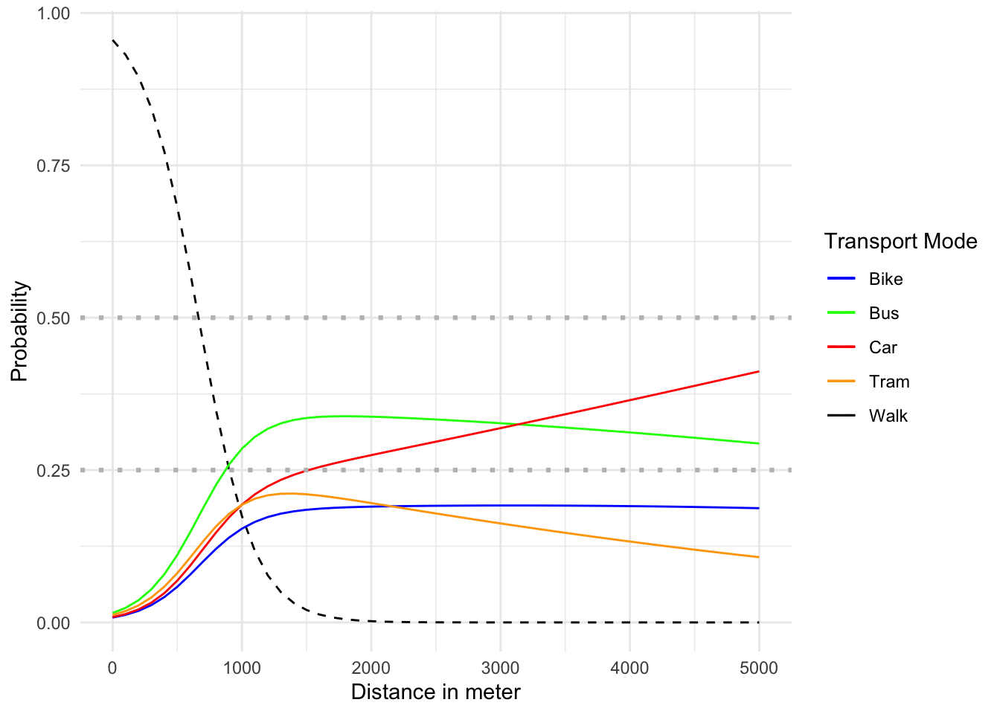
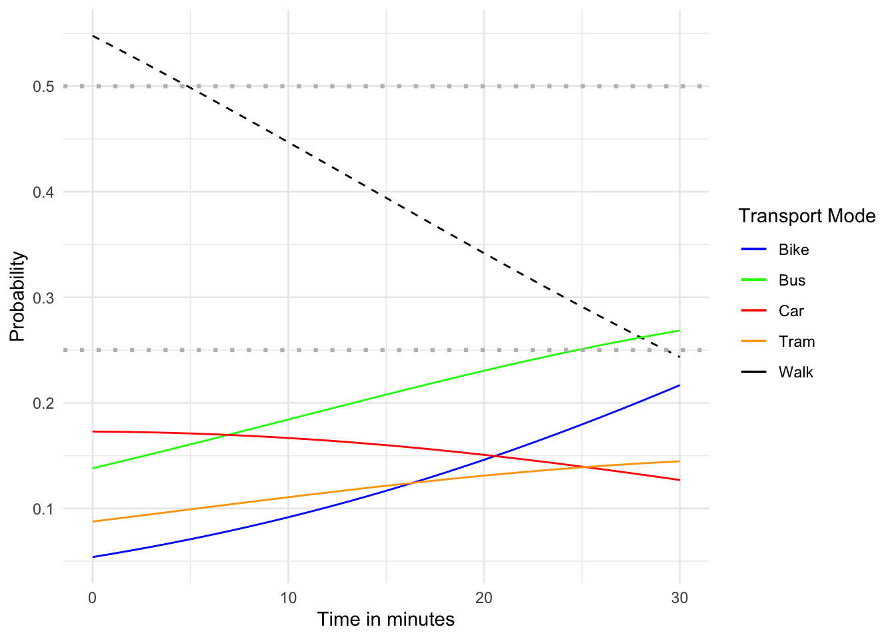

Commuting Mode Choice based on Distance to the next Train Station
Author
Marijana Maric and Pablo Bischofberger
Code
# You can set chunk options individually per code chunk, as was done with this# code chunk.# echo: false hides the code from the generated output# warning: false hides warnings from the generated output# message: false hides messages from the generated output# To apply the setting for all code chunks, add the options to the yaml header of the document (in between the ---) without the preceeding "#|".# Loading all needed libraries knitr::opts_chunk$set(echo =TRUE)library(readr)library(dplyr)library(lubridate)library(ggplot2)library(plotly)library(tidyr)library(sf)library(sp)library(tmap)library(tmaptools)library(geosphere)library(purrr)library(cowplot)library(rnaturalearth)library(rnaturalearthdata)library(gt)library(knitr)library(rstatix)library(nnet)library(effects)library(broom)
Code
# Write all needed functions# Function to get trips for a single userget_trips <-function(df) { df <- df %>%arrange(datetime) %>%# Sort data by datetimemutate(time_diff =c(0, difftime(datetime[-1], datetime[-n()], units ="mins"))) %>%# Calculate time difference between recordsmutate(trip_id =cumsum(transport_mode !=lag(transport_mode, default = transport_mode[1]) | time_diff >15)) %>%# Identify individual tripsmutate(next_transport_mode_tmp =lead(transport_mode, default =NA),last_transport_mode_tmp =lag(transport_mode, default =NA)) %>%group_by(trip_id) %>%mutate(next_transport_mode =last(next_transport_mode_tmp),last_transport_mode =first(last_transport_mode_tmp)) df$next_transport_mode_tmp <-NULL df$last_transport_mode_tmp <-NULLreturn(df)}# Function to calculate distances for one usercalculate_distances <-function(data) {# Convert the data to sf object for spatial operations coordinates <-st_as_sf(data, coords =c("lon_x", "lat_y"), crs =4326) coordinates_matrix <-st_coordinates(coordinates) distances <-c(0, distVincentySphere(coordinates_matrix[-1, ], coordinates_matrix[-nrow(data), ])) data$distance <- distances# Calculate cumulative distance and time for each trip data <- data %>%arrange(trip_id, datetime) %>%group_by(trip_id) %>%mutate(cumulative_distance =cumsum(distance),cumulative_time =cumsum(time_diff),elapsed_time =sum(time_diff),total_trip_distance =sum(distance) ) %>%ungroup() %>%mutate(has_train_before = last_transport_mode =='Train',has_train_after = next_transport_mode =='Train',has_train_somewhere = transport_mode =="Train"| next_transport_mode =='Train'| last_transport_mode =='Train' )return(data)}# Function to visualize a user's trajectoryvisualize_trajectory <-function(user_id, trip_id, data) {# Subset the data for the specified user and trip specific_data <- data %>% dplyr::filter(user_id ==!!user_id, trip_id %in%c((!!trip_id -1), !!trip_id, (!!trip_id +1)))# If there's no data for this user and trip, return a messageif (nrow(specific_data) ==0) {return("No data for this user and trip") }# Convert the data to a spatial object data_sf <- sf::st_as_sf(specific_data, coords =c("lon_x", "lat_y"), crs =4326)# Set up the map tmap::tmap_mode("view")# Create the map map <- tmap::tm_shape(data_sf) + tmap::tm_dots(col ="transport_mode") + tmap::tm_basemap(server ="OpenStreetMap") + tmap::tm_layout(title =paste("User ID:", user_id, "Trip ID:", trip_id))return(map)}generate_ylabel <-function(measure) {# Check if measure is one of the expected inputsif (!(measure %in%c("distance", "total_time", "direct_distance"))) {return(measure) }# Assign a label based on the measureif (measure =="distance") { label <-paste0("Distance (m)") } elseif (measure =="total_time") { label <-paste0("Time (min)") } elseif (measure =="direct_distance") { label <-paste0("Direct distance (m)") }return(label)}# Function to create a boxplotcreate_boxplot <-function(data, value_column, remove_outliers =FALSE, add_title =FALSE, x_label_visible =TRUE, fixed_order =FALSE) {if (remove_outliers) { data <- data %>%group_by(transport_mode) %>%mutate(Q1 =quantile(get(value_column), 0.25, na.rm =TRUE),Q3 =quantile(get(value_column), 0.75, na.rm =TRUE),IQR = Q3 - Q1) %>%filter(#get(value_column) >= (Q1 - 1.5 * IQR),get(value_column) <= (Q3 +1.5* IQR)) }if (fixed_order){# Define the fixed order for the transport_mode factor fixed_order <-c("Walk", "Bike", "Bus","Tram", "Car") data$transport_mode <-factor(data$transport_mode, levels = fixed_order) }else{ data$transport_mode <-with(data, reorder(transport_mode, get(value_column), FUN = mean)) # Order by mean } p<-ggplot(data, aes(x = transport_mode, y =!!sym(value_column), fill = transport_mode)) +geom_boxplot(outlier.shape =NA) +# Don't plot outliersgeom_jitter(width =0.3, size =1, alpha =0.5) +stat_summary(fun = mean, geom ="point", shape =20, size =3, color ="black", fill ="white") +scale_fill_brewer(palette ="Set3") +labs(y =generate_ylabel(value_column)) +theme_minimal() +theme(plot.title =element_text(hjust =0.5, face ="bold", size =14),axis.title.x =element_text(face ="bold", size =12),axis.title.y =element_text(face ="bold", size =12),axis.text.x =element_text(angle =45, hjust =1),legend.position ="none" )if (add_title) { p <- p +labs(title =paste("Boxplot of", value_column, "by Transport Mode")) }if (x_label_visible) { p <- p +labs(x ="Transport Mode") }else{ p <- p +labs(x ="") }return(p)}# density plotcreate_density_plot <-function(data, x_var ="distance", group_var ="transport_mode", title ="Density Plot") {library(ggplot2)ggplot(data, aes_string(x = x_var, fill = group_var)) +geom_density(alpha =0.5) +labs(title = title, x = x_var, y ="Density") +theme_minimal()}combined_boxplot <-function(data, value_columns, remove_outliers =FALSE, title ="Combined Boxplots") {# Create an empty list to store individual plots plot_list <-list() x_label_visible =FALSE# Loop over value_columns to create individual boxplotsfor (i in1:length(value_columns)) {if (i ==length(value_columns)){ x_label_visible =TRUE } p <-create_boxplot(data, value_columns[i], remove_outliers, FALSE, x_label_visible, TRUE) plot_list[[i]] <- p }# Combine the plots using cowplot combined_plot <- cowplot::plot_grid(plotlist = plot_list, ncol =1)# Add a common title to the combined plot combined_plot <- cowplot::ggdraw(combined_plot) + cowplot::draw_label(title, fontface ='bold', size =14, x =0.5, y =0.98)return(combined_plot)}
Background and Research Goals
In urban areas, understanding the factors that influence individuals’ transport mode choices is crucial for developing efficient and sustainable mobility systems (European Environment Agency (EEA) 2019). The proximity to a train station has been identified as a significant factor in determining transport mode preferences (Wibowo and Chalermpong 2010). Shorter distances to train stations may encourage walking and public transportation use, while longer distances may lead to increased reliance on private vehicles or alternative modes of transport (Tennøy, Knapskog, and Wolday 2022).
The research goals of this study are twofold. First, we aim to investigate the impact of distance to the nearest train station on transport mode choices. By analyzing real-world data and employing statistical methods, such as ANNOVA and regression analysis, we seek to uncover patterns and relationships between distance and transport mode preferences.
Second, we aim to examine the role of different distance measurement methods in analyzing the relationship between distance and transport mode choice. We will explore the effectiveness of statistical methods in uncovering insights and evaluate how the choice of distance measurement influences the analysis.
To address these objectives and shed light on the relationship between distance to the nearest train station and transport mode choices, the following research questions will guide our investigation:
How does the distance to the nearest train station influence individuals’ transport mode preferences?
Can statistical methods, such as statistical tests and regression analysis effectively analyze the relationship between distance and transport mode choice, and provide valuable insights?
How does the choice of distance measurement method influence the analysis of the relationship between distance and transport mode?
Data and Methods
Dataset
The data comprises GPS trajectory data that was collected from nine individuals between the beginning of April 2023 and the conclusion of May 2023, who were tracking their movement with the POSMO application. The Posmo Project app automatically records all activities that each individual undertakes on foot, by bike, public transport or by car (Genossenschaft Posmo Schweiz 2022). The initial data set follows a specific structure and includes the following variables:
user_id: A unique identifier for each individual in the study. (chr)
datetime: The date and time of each recorded location. (dttm)
weekday: The day of the week. (chr)
transport_mode: The mode of transportation used by the individual (e.g., walking, biking, car, bus or tram).(chr)
lon_x and lat_y: The longitude and latitude of each recorded location.(dbl)
Data Preparation
The process of data cleansing, a key element in any research project, is optimized using well-defined steps. Initially, data from CSV files are compiled into a combined data frame. Subsequently, the data sets are converted into appropriate data types to ensure consistency with the following steps of the analysis. The transport mode column is modified to combine similar types like ‘Run’ and ‘Walk’. This step helps to increase the intensity of subsequent analyses. This is followed by a rigorous data cleaning process to detect and delete any instances of NA values or empty strings, ensuring data integrity and completeness. A summary of the cleand data is shown in Table 1.
Code
# List all CSV files in the directoryfile_list <-list.files(path ="data", pattern ="*.csv", full.names =TRUE)# Read each CSV file into a data frame and concatenate them togetherposmo <-do.call(rbind, lapply(file_list, function(x) read.csv(x, stringsAsFactors =FALSE)))# Convert the datetime column to POSIXct typeposmo$datetime <-as.POSIXct(posmo$datetime, format ="%Y-%m-%dT%H:%M:%S", tz ="GMT")# Convert user_id to a factor and then to numericposmo$user_id <-as.numeric(factor(posmo$user_id))# Keep only the necessary columns and combine walk and runposmo <- posmo |>arrange(user_id, datetime) |>select(user_id, datetime,transport_mode, lon_x, lat_y) |>mutate(transport_mode =ifelse(transport_mode =='Run', 'Walk', transport_mode),transport_mode =ifelse(transport_mode =='Funicular', 'Tram', transport_mode))# Check for NA's and empty strings in the dataany(is.na(posmo))# check which columns: apply(posmo, 2, function(x) any(is.na(x)))#remove na dataposmo <-na.omit(posmo)any(sapply(posmo |>select(user_id,transport_mode, lon_x, lat_y), function(x) any(x =="")))# Create a data frame with non-empty transport_modeposmo <- posmo|>filter(transport_mode !="")
Code
# Create a summarized dataframesummary_df <- posmo %>%summarise(num_users =n_distinct(user_id),num_data_points =n(),num_datetimes =n_distinct(datetime),min_date =min(datetime, na.rm =TRUE),max_date =max(datetime, na.rm =TRUE),num_transport_modes =n_distinct(transport_mode),avg_longitude =mean(lon_x, na.rm =TRUE),max_longitude =max(lon_x, na.rm =TRUE),min_longitude =min(lon_x, na.rm =TRUE),avg_latitude =mean(lat_y, na.rm =TRUE),max_latitude =max(lat_y, na.rm =TRUE),min_latitude =min(lat_y, na.rm =TRUE) )# Convert to gt table# summary_table <- gt(summary_df, caption = "Table 1: Summary of Posmo Data") %>%# cols_label(# num_users = "Number of Users",# num_data_points = "Total number of datapoints",# num_datetimes = "Number of Datetimes",# min_date = "Minimal recorded datetime",# max_date = "Maximum recorded datetime",# num_transport_modes = "Number of Transport Modes",# avg_longitude = "Average Longitude",# max_longitude = "Maximum Longitude",# min_longitude = "Minimum Longitude",# avg_latitude = "Average Latitude",# max_latitude = "Maximum Latitude",# min_latitude = "Minimum Latitude"# ) %>%# fmt_number(# columns = vars(avg_longitude, max_longitude, min_longitude, avg_latitude, max_latitude, min_latitude),# decimals = 2# )# # # # Print the table# summary_table |> as_raw_html()kable(summary_df, digits =1, col.names =c(num_users ="Number of Users",num_data_points ="Total number of datapoints",num_datetimes ="Number of Datetimes",min_date ="Minimal recorded datetime",max_date ="Maximum recorded datetime",num_transport_modes ="Number of Transport Modes",avg_longitude ="Average Longitude",max_longitude ="Maximum Longitude",min_longitude ="Minimum Longitude",avg_latitude ="Average Latitude",max_latitude ="Maximum Latitude",min_latitude ="Minimum Latitude"),caption ="Summary of Posmo Data {#tbl-1}", label ="#tbl-1")
Table 1: Summary of Posmo Data
Number of Users
Total number of datapoints
Number of Datetimes
Minimal recorded datetime
Maximum recorded datetime
Number of Transport Modes
Average Longitude
Maximum Longitude
Minimum Longitude
Average Latitude
Maximum Latitude
Minimum Latitude
9
116808
99906
2023-04-01 13:05:36
2023-05-31 14:39:59
10
8.5
11.5
-12.3
47.3
61.6
3.7
Once the initial data cleaning is completed, the data cycle is further enhanced with analytical metrics. A unique identifier ‘trip_id’ is calculated for each particular trip, it provides a systematic way of classifying and analysing data. Subsequently, the data are grouped according to each trip, and then two measures of distance (in meters) and elapsed time (in minutes) are calculated for each trip. Lastly, the data set is filtered to store only trips that occur immediately before or after a train trip. This strategic selection of data lays the foundation for answering the research questions, focusing on the patterns associated with the mode of transportation before starting a train trip.
In the end, we have the following data structure:
trip_id: A unique identifier assigned to each individual journey made by a participant in the study. This identifier is used to differentiate between different trips made by the same user. (int)
user_id: A unique identifier for each participant in the study. This identifier is used to differentiate between the data of different participants. (num)
day: The date on which the recorded location data was collected. (Date)
transport_mode: The mode of transportation used by the participant at a given recorded location. This could include various modes such as walking, using a bike, car, bus, tram, or other. (chr)
last_transport_mode: The mode of transportation that was used by the participant directly before the current transport_mode. This provides a sense of sequence in the participant’s mode of transportation. (chr)
next_transport_mode: The mode of transportation that was used by the participant directly after the current transport_mode. This, along with last_transport_mode, provides a context to the sequence of transportation modes used by the participant. (chr)
distance: The total distance in meters covered by the participant during a particular trip. This measurement is derived from the collected location data. (num)
total_time: The total time in minutes taken by the participant to complete a particular trip. This measurement is derived from the collected location data and corresponds to the distance covered in the same trip. (num)
direct_distance: The shortest possible distance in meters between the starting and ending point of a trip. This measurement is calculated using the ‘as the crow flies’ method, which ignores any detours or turns taken during the trip. (num)
A summary of the enhanced data is shown in Table 2.
Code
# Remove duplicated rows, split the data frame by user_id, apply the get_trips function to each group, and bind the results into a single data frame posmo_enriched.posmo_enriched <- posmo|>distinct() |>group_by(user_id)|>group_split()|>map_dfr(get_trips)# Apply the calculate_distances function to each userdata_by_user <-split(posmo_enriched, posmo_enriched$user_id)posmo_enriched <-do.call(rbind, lapply(data_by_user, calculate_distances))# Filter trips that involve a trainposmo_enriched_train <- posmo_enriched |>filter(has_train_somewhere ==TRUE)
# Create a summarized dataframesummary_df <- posmo_analysis %>%summarise(num_trips =n_distinct(trip_id),num_users =n_distinct(user_id),num_days =n_distinct(day),min_day =min(day, na.rm =TRUE),max_day =max(day, na.rm =TRUE),num_transport_modes =n_distinct(transport_mode),avg_distance =mean(distance, na.rm =TRUE),max_distance =max(distance, na.rm =TRUE),min_distance =min(distance, na.rm =TRUE),avg_total_time =mean(total_time, na.rm =TRUE),max_total_time =max(total_time, na.rm =TRUE),min_total_time =min(total_time, na.rm =TRUE),avg_direct_distance =mean(direct_distance, na.rm =TRUE),max_direct_distance =max(direct_distance, na.rm =TRUE),min_direct_distance =min(direct_distance, na.rm =TRUE) )# Convert to gt table# summary_table <- gt(summary_df, caption = "Table 2: Summary of Posmo Analysis Data") %>%# cols_label(# num_trips = "Number of Trips",# num_users = "Number of Users",# num_days = "Number of Days",# min_day = "Earliest Recorded Day",# max_day = "Latest Recorded Day",# num_transport_modes = "Number of Transport Modes",# avg_distance = "Average Distance (m)",# max_distance = "Maximum Distance (m)",# min_distance = "Minimum Distance (m)",# avg_total_time = "Average Total Time (min)",# max_total_time = "Maximum Total Time (min)",# min_total_time = "Minimum Total Time (min)",# avg_direct_distance = "Average Direct Distance (m)",# max_direct_distance = "Maximum Direct Distance (m)",# min_direct_distance = "Minimum Direct Distance (m)"# ) %>%# fmt_number(# columns = vars(avg_distance, max_distance, min_distance, avg_total_time, max_total_time, min_total_time, avg_direct_distance, max_direct_distance, min_direct_distance),# decimals = 2# )# # # Print the table# # print(summary_table)# summary_table |> as_raw_html()kable(summary_df, digits =1, col.names =c(num_trips ="Number of Trips",num_users ="Number of Users",num_days ="Number of Days",min_day ="Earliest Recorded Day",max_day ="Latest Recorded Day",num_transport_modes ="Number of Transport Modes",avg_distance ="Average Distance (m)",max_distance ="Maximum Distance (m)",min_distance ="Minimum Distance (m)",avg_total_time ="Average Total Time (min)",max_total_time ="Maximum Total Time (min)",min_total_time ="Minimum Total Time (min)",avg_direct_distance ="Average Direct Distance (m)",max_direct_distance ="Maximum Direct Distance (m)",min_direct_distance ="Minimum Direct Distance (m)"),caption ="Summary of Posmo Analysis Data {#tbl-2}", label ="#tbl-2")
Table 2: Summary of Posmo Analysis Data
Number of Trips
Number of Users
Number of Days
Earliest Recorded Day
Latest Recorded Day
Number of Transport Modes
Average Distance (m)
Maximum Distance (m)
Minimum Distance (m)
Average Total Time (min)
Maximum Total Time (min)
Minimum Total Time (min)
Average Direct Distance (m)
Maximum Direct Distance (m)
Minimum Direct Distance (m)
292
8
37
2023-04-03
2023-05-18
7
11939.3
1428946
0
170.8
9171.4
0.2
5583.9
63152.6
0
Selection of Relevant Trips
When looking into the summary of the data, one can clearly see that, there is some work needed on outliers and identifying just relevant trips. As relevant trips, we see the usage of a transport mode to reach a train. So, a relevant trip should not be too long nor be too far. For that, we are using different box plots and other visuals to identify potential thresholds for the data.
a. Initial State of the Dataset
In examining the box plots, it’s evident that the outliers significantly influence the overall visual representation, making it challenging to discern underlying patterns. Furthermore, it’s noteworthy that each transportation mode exhibits distinct outlier patterns across different measures. This visualization (Figure 1) reinforces the necessity of further scrutinizing and refining our data, as outlined in the subsequent sections of this research project.
b. Performed Analysis and Transformations on the Dataset
In our analysis, we focus on relevant trajectories for various modes of transportation to a train station. These modes include walking, driving, biking, bus, and tram. We filter the dataset for each mode based on specific criteria such as speed and total length. Relevant walking trips have speeds between 2-160 meters per minute and total trip time under 60 minutes. Similar criteria are applied to other modes. We combine the relevant trips for analysis and use plots to visualize time, speed, and distance, identifying outliers and patterns. This method ensures accurate analysis of each mode’s relevant trips.
After all transformation, our dataset includes the most relevant trajectories for each transport mode to the train station: walking, driving, cycling, bus, and tram. Early indications from our box-plot visualizations suggest that there may be differences in mean values between transport modes (Figure 2, Figure 3 and Figure 4). This makes us confident that our dataset can help to answer our research questions.
This study employed statistical analyses and regression modeling to examine the relationship between distance, time, and preferred transport modes. Three measures (distance, total time, and direct distance) were assessed across five modes of transport (Walk, Bike, Bus, Car, and Tram).
Distance: This measure refers to the total length of the travel path in meters.
Total Time: This measure represents the total time spent for the trip, from start to end, measured in minutes.
Direct Distance: This measure indicates the straight-line distance from the origin to the destination, disregarding any detours or route variations.
To compare differences in measures, statistical tests were chosen after checking assumptions of normality and homogeneity of variances. The Shapiro-Wilk test (Shapiro and Wilk 1965) was used to test for normality in each measure across the different modes of transport. To examine the homogeneity of variances Levene’s test (Levene 1960) was used. This test is crucial for certain statistical methods like the traditional ANOVA.
Since data violated assumptions, Welch’s ANOVA (Welch 1951) was used, followed by the Games-Howell post-hoc test (Games and Howell 1976) for pairwise comparisons.
Regression analysis utilized multinomial logistic regression models to estimate probabilities of choosing modes based on varying distances and total time values. Distance and time calculations were based on participants’ trajectory data, using precise coordinates and timestamps.
It’s important to note the small sample size limited generalizability, and biases may exist as the data only represents students in a specific module. However, these methods provided valuable insights into the relationship between distance, time, and transport mode preferences within this context.
Results
Statistical Analysis to Examine Mean Value Differences
Shapiro-Wilk and Levene’s test
The results of the Shapiro-Wilk test showed significant deviation from normality (p < 0.05) for all combinations of measures and transport modes. This suggests that the data for these groups do not follow a normal distribution.
Code
# Shapiro-Wilk test for normalitymeasures <-c("distance", "total_time", "direct_distance")transport_modes <-unique(posmo_train_related_filtered$transport_mode)for (measure in measures){for (transport_mode in transport_modes){print(paste("Shapiro-Wilk test for ", measure, " and transport mode ", transport_mode))print(shapiro.test(posmo_train_related_filtered[[measure]][posmo_train_related_filtered$transport_mode==transport_mode])) }}
The results of the Levene’s test show significant deviation from the assumption of equal variances for ‘distance’ and ‘direct_distance’ (p < 0.05), while ‘total_time’ did not significantly deviate from this assumption (see Table 3).
Table 3: Results of Levene’s test
Measure
p-value
distance
4.134e-06
total_time
0.191
direct_distance
7.783e-08
Code
# Levene's test for homogeneity of variancesmeasures <-c("distance", "total_time", "direct_distance") # Define the measuresfor (measure in measures) {print(paste("Levene's Test for", measure))print(car::leveneTest(as.formula(paste(measure, "~ transport_mode")), data = posmo_train_related_filtered))} # Loop over all measures
Welch’s ANOVA and Games-Howell post-hoc test
Given the violations of normality and homogeneity of variances for some of the measures, we performed Welch’s ANOVA tests, which does not require these assumptions, followed by the Games-Howell post-hoc test for pairwise comparisons.
The results for Welch’s ANOVA tests are as follows (Table 4):
Table 4: Results for Welch’s ANOVA tests
Measure
F statistic
num df
denom df
p-value
Distance
40.118
4.000
55.619
8.796e-16
Total Time
2.7365
4.000
69.250
0.03557
Direct Distance
51.228
4.000
54.141
<2.2e-16
The p-values for all three measures (distance, total time and direct distance) are below the threshold of 0.05. Given these results, we reject the null hypothesis of equal means across all transport modes for these measures. To further investigate the specific pairs of transport modes with significantly different means, we conducted the Games-Howell post-hoc test.
The results of the Games-Howell post-hoc test showed significant differences in pairwise comparisons. Below are the statistically significant results (Table 5):
Table 5: Results for Games-Howell post-hoc test
Comparison
Estimate
p-value
Bike vs Walk (distance)
-1795.35
0.019
Bus vs Walk (distance)
-1715.39
4.30e-09
Car vs Walk (distance)
-2175.52
1.60e-10
Tram vs Walk (distance)
-1480.46
2.34e-05
Code
# Perform Welch's ANOVA for distanceoneway.test(distance ~ transport_mode, data = posmo_train_related_filtered, var.equal =FALSE)# Perform Welch's ANOVA for total_timeoneway.test(total_time ~ transport_mode, data = posmo_train_related_filtered, var.equal =FALSE)# Perform Welch's ANOVA for direct_distanceoneway.test(direct_distance ~ transport_mode, data = posmo_train_related_filtered, var.equal =FALSE)# Perform Games-Howell post-hoc test for distancegames_howell_test(posmo_train_related_filtered, distance ~ transport_mode)# Perform Games-Howell post-hoc test for total_timegames_howell_test(posmo_train_related_filtered, total_time ~ transport_mode)# Perform Games-Howell post-hoc test for direct_distancegames_howell_test(posmo_train_related_filtered, direct_distance ~ transport_mode)
These results indicate that for the measure distance, Bike, Bus, Car, and Tram all had significantly higher average distance than Walk. The negative estimate values represent the average difference in distance compared to Walk, with all modes of transport having more distance on average. This pattern is similarly observed when assessing the direct distance. However, when it comes to time, the data aligns with the chart’s depiction, demonstrating that the mean times across the different modes of transport do not show significant differences.
Regression Analysis
Distance
The analysis conducted using multinomial logistic regression revealed interesting insights into the relationship between distance and individuals’ preferred transport modes (Table 6 and Figure 5). The probabilities of choosing different modes (Walk, Bike, Bus, Car, and Tram) were examined based on varying distances. The calculated Z-scores are fairly large, suggesting that the coefficients for each transport mode are significantly different from zero. This indicates that distance does have a significant effect on the choice of transport mode. The fit of the model seems to be reasonably good, based on the residual deviance and the AIC values.
The probability of choosing Walk decreased significantly as the distance to the train station increased. At shorter distances (e.g., 24 meters), the probability of selecting Walk was high, with approximately 92.7% likelihood and stays over 50% untill 1150 meters where it is dropping below. That means that every second individual is chosing a different transport mode than walking when the train station is away more then 1150 meters. On 1700 meters, just every fifth individual is choosing to go by walk. Starting from 2100 meters, the probability drops to less than 10%.
Overall, as the distance increased to 2500 meters and longer, the probability diminished to a small value, indicating a strong aversion to walking longer distances.
As the distance increases, the probability of choosing the “Bike” mode also increases. The probabilities start at 1.38% and gradually rise until they reache it’s maximum at 18.55%. This indicates that as the distance to the destination increases, there is a higher likelihood of choosing the “Bike” mode as the preferred transport mode.
Similar patterns were observed for Bus, Car, and Tram. The probabilities of choosing these modes increases as the distance increases. Each mode exhibited distinct probabilities at various distances, signifying the nuanced preferences of individuals.
These findings shed light on the relationship between distance and transport mode preferences. They highlight the decreased likelihood of selecting Walk as distances increase, while also emphasizing the varied preferences for Bike, Bus, Car, and Tram based on distance. Importantly, these probabilities are specific to the examined dataset and should be interpreted within the context of the broader study.
# weights: 15 (8 variable)
initial value 329.934772
iter 10 value 228.119051
final value 226.022321
converged
Table 6: Summary of the regression model of transport mode and distance
y.level
term
estimate
std.error
statistic
p.value
Bike
(Intercept)
-4.21238
0.19595
-21.49753
0
Bike
distance
0.00226
0.00020
11.24454
0
Bus
(Intercept)
-3.76963
0.26281
-14.34356
0
Bus
distance
0.00230
0.00021
11.04462
0
Car
(Intercept)
-4.04416
0.27165
-14.88712
0
Car
distance
0.00234
0.00021
11.34435
0
Tram
(Intercept)
-3.95006
0.13436
-29.39859
0
Tram
distance
0.00218
0.00020
10.85561
0
Code
# Create the plotplot <-ggplot(result, aes(x = total_time_value)) +geom_line(aes(y = Walk, color ="Walk"), linetype ="dashed") +geom_line(aes(y = Bike, color ="Bike")) +geom_line(aes(y = Bus, color ="Bus")) +geom_line(aes(y = Car, color ="Car")) +geom_line(aes(y = Tram, color ="Tram")) +scale_color_manual(values =c("Walk"="black", "Bike"="blue", "Bus"="green", "Car"="red", "Tram"="orange")) +geom_hline(yintercept =c(0.5, 0.25), linetype ="dotted", color ="gray",linewidth =1.1)+labs(x ="Distance in meter", y ="Probability") +theme_minimal()# Add legends for the transport modesplot <- plot +labs(color ="Transport Mode")# Display the plotplot
Figure 5: Visualization of the regression model of transport mode and distance
Direct Distance
The analysis of the distance already revealed substantial insights, the same analysis with the direct distance to the train station and the selection of the transport mode shows even stronger effects and sensitivities (Table 7 and Figure 6). All results are comparable, significant as the effects of distance.
As the direct distance to the train station increased, the probability of selecting Walk decreased more rapidly than with the original “distance” measure. For instance, at a direct distance of 650 meters, less than 50% of individuals were observed to choose walking as their mode of transport. The influence of direct distance became even more pronounced at greater distances. Around 950 meters, less than 20% or every fifth person opted to walk. This trend continued to the point where at approximately 1600 meters, only around 1% of individuals decided to walk.
Compared to the analysis with the overall trip distance, where a considerable proportion of individuals (about 10%) still preferred to walk at distances around 2100 meters, the “direct_distance” analysis reveals a much stronger aversion to walking longer distances. This indicates that the direct distance between the starting point and the train station may be a more accurate representation of individuals’ perceptions of distance and their consequent transport mode choices.
# weights: 15 (8 variable)
initial value 329.934772
iter 10 value 219.283360
final value 211.767484
converged
Table 7: Summary of the regression model of transport mode and direct distance
y.level
term
estimate
std.error
statistic
p.value
Bike
(Intercept)
-4.78602
0.31008
-15.43471
0
Bike
direct_distance
0.00466
0.00041
11.40403
0
Bus
(Intercept)
-4.12695
0.27001
-15.28429
0
Bus
direct_distance
0.00462
0.00042
11.01625
0
Car
(Intercept)
-4.69759
0.27662
-16.98224
0
Car
direct_distance
0.00480
0.00041
11.74964
0
Tram
(Intercept)
-4.36215
0.33205
-13.13721
0
Tram
direct_distance
0.00446
0.00043
10.46212
0
Code
# Create the plotplot <-ggplot(result, aes(x = total_time_value)) +geom_line(aes(y = Walk, color ="Walk"), linetype ="dashed") +geom_line(aes(y = Bike, color ="Bike")) +geom_line(aes(y = Bus, color ="Bus")) +geom_line(aes(y = Car, color ="Car")) +geom_line(aes(y = Tram, color ="Tram")) +scale_color_manual(values =c("Walk"="black", "Bike"="blue", "Bus"="green", "Car"="red", "Tram"="orange")) +geom_hline(yintercept =c(0.5, 0.25), linetype ="dotted", color ="gray",linewidth =1.1)+labs(x ="Distance in meter", y ="Probability") +theme_minimal()# Add legends for the transport modesplot <- plot +labs(color ="Transport Mode")# Display the plotplot

Figure 6: Visualization of the regression model of transport mode and direct distance
Time
The same analysis was conducted for the time measure. The resulting probabilities represent the likelihood of choosing a specific transport mode based on the total time values. The multinomial logistic regression model was fitted using the “total_time” variable as the predictor and the transport mode as the outcome variable, with the “Walk” mode as the reference level. The results of this regresssion are much harder to interpret and are less concrete as the ones before.
In this case, total time is a significant predictor for the Bike and Bus modes (p-values of 0.00201 and 0.02670, respectively), but not for the Car and Tram modes. This suggests that as total time increases, individuals are more likely to choose biking or taking the bus over walking, but total time does not significantly affect the choice between using the car or taking the tram over walking (Table 8).
# weights: 15 (8 variable)
initial value 329.934772
iter 10 value 293.554276
final value 292.823378
converged
Table 8: Summary of the regression model of transport mode and time
y.level
term
estimate
std.error
statistic
p.value
Bike
(Intercept)
-2.31855
0.40802
-5.68246
0.00000
Bike
total_time
0.07342
0.02377
3.08849
0.00201
Bus
(Intercept)
-1.37823
0.32574
-4.23109
0.00002
Bus
total_time
0.04921
0.02221
2.21585
0.02670
Car
(Intercept)
-1.15360
0.34593
-3.33477
0.00085
Car
total_time
0.01675
0.02657
0.63020
0.52856
Tram
(Intercept)
-1.83401
0.39089
-4.69188
0.00000
Tram
total_time
0.04377
0.02615
1.67367
0.09419
Looking into the results, we can say that at a total time value of 10 minutes, the predicted probabilities suggest that individuals are most likely to choose walking with a probability of 45%, followed by using the “Bike” with 9.2%, taking the bus with 18.4%, taking the car with 16.7%, and using the Tram with 11.1% (Table 9).
Table 9: Probabilities of choosing different transport modes based on total time values
Total Time (min)
Walk
Bike
Bus
Car
Tram
10
44.7%
9.2%
18.4%
16.7%
11.1%
20
34.2%
14.6%
23.0%
15.1%
13.1%
30
24.3%
21.7%
26.8%
12.7%
14.5%
40
16.1%
29.9%
29.1%
9.9%
14.8%
50
10.0%
38.8%
29.6%
7.3%
14.3%
60
5.9%
47.5%
28.5%
5.1%
13.0%
As the total time value increases, the predicted probabilities for going by walk decreases strongly (Figure 7).
Code
# Create the plotplot <-ggplot(result, aes(x = total_time_value)) +geom_line(aes(y = Walk, color ="Walk"), linetype ="dashed") +geom_line(aes(y = Bike, color ="Bike")) +geom_line(aes(y = Bus, color ="Bus")) +geom_line(aes(y = Car, color ="Car")) +geom_line(aes(y = Tram, color ="Tram")) +scale_color_manual(values =c("Walk"="black", "Bike"="blue", "Bus"="green", "Car"="red", "Tram"="orange")) +geom_hline(yintercept =c(0.5, 0.25), linetype ="dotted", color ="gray",linewidth =1.1)+labs(x ="Time in minutes", y ="Probability") +theme_minimal()# Add legends for the transport modesplot <- plot +labs(color ="Transport Mode")# Display the plotplot

Figure 7: Visualization of the regression model of transport mode and time
Discussion
Our study provides important insights into the influence of distance on transport mode preferences and the effectiveness of statistical methods in analyzing this relationship.
Firstly, we found that the distance to the nearest train station strongly affects individuals’ choices of transport mode. As the distance increases, the likelihood of selecting walking decreases, while the preference for alternative modes such as biking, taking the bus, driving a car, or using the tram increases.
Secondly, our statistical analysis demonstrated the effectiveness of tests and regression analysis in examining the relationship between distance and transport mode choice. These methods allowed us to quantify the impact of distance on mode preferences and provided valuable insights into the preferences of individuals.
Lastly, we investigated the influence of different distance measurement methods. Comparing the overall trip distance and the direct distance to the train station, we observed that the direct distance measurement revealed a stronger aversion to walking longer distances. Additionally, including total time alongside distance further influenced mode choice, with longer times favoring biking or taking the bus over walking.
In conclusion, our study highlights the importance of distance in shaping transport mode preferences, validates the effectiveness of statistical methods in analyzing this relationship, and emphasizes the impact of distance measurement methods and time considerations on mode choice.
References
European Environment Agency (EEA). 2019. The First and Last Mile — the Key to Sustainable Urban Transport. Transport and Environment Report 2019. Publications Office of the European Union. https://data.europa.eu/doi/10.2800/200903.
Games, Paul A., and John F. Howell. 1976. “Pairwise Multiple Comparison Procedures with Unequal N’s and/or Variances: A Monte Carlo Study.”Journal of Educational Statistics 1 (2): 113–25. https://doi.org/10.3102/10769986001002113.
Levene, H. 1960. “Robust Tests for Equality of Variances.”Contributions to Probability and Statistics: Essays in Honor of Harold Hotelling 2: 278–92.
Shapiro, S. S., and M. B. Wilk. 1965. “An Analysis of Variance Test for Normality (Complete Samples).”Biometrika 52 (3/4): 591. https://doi.org/10.2307/2333709.
Tennøy, Aud, Marianne Knapskog, and Fitwi Wolday. 2022. “Walking Distances to Public Transport in Smaller and Larger Norwegian Cities.”Transportation Research Part D: Transport and Environment 103 (February): 103169. https://doi.org/10.1016/j.trd.2022.103169.
Welch, B. L. 1951. “On the Comparison of Several Mean Values: An Alternative Approach.”Biometrika 38 (3/4): 330. https://doi.org/10.2307/2332579.
Wibowo, Sony Sulaksono, and Saksith Chalermpong. 2010. “Characteristics of Mode Choice Within Mass Transit Catchments Area.”Eastern Asia Society for Transportation Studies. https://doi.org/10.11175/easts.8.1261.